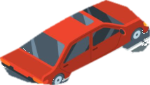

Maneuvers: Passing, Turning, and Parking
Operating across opposing lanes, executing precision intersection turns, and securing stationary vehicles require non-negotiable statutory spatial cushions. Master the codified geometric rules under Texas Transportation Code Chapter 545 governing safe overtaking, turn signaling, and parking clearance radials.



Texas statute strictly prohibits returning to your lane during a pass until both headlights of the overtaken vehicle are visible in your rearview mirror and before coming within 200 feet of oncoming vehicles. Unattended vehicles must have engines stopped, keys removed, and brakes set.
Kinetic Corridor & Clearance Visualizer
Select a driving maneuver to inspect statutory spatial boundaries, required sightline buffers, and physical clearance parameters.
Complete pass prior to 200' mark.
Rearview mirror check before merge.
Passing to left with oncoming traffic.
TTC § 545.056 Statutory Prohibitions: You may never drive on the left side of the roadway to pass within 100 feet of an intersection, railroad grade crossing, bridge, viaduct, or tunnel, nor when approaching a curve or hill crest.
Statutory Maneuver Mandates & Clearance Thresholds
Swipe horizontally to review non-negotiable Texas statutory clearance distances for passing, turning, and stationary parking.
Maneuver Execution Protocol
The 3 operational phases required to verify, execute, and secure vehicular transitions under Texas law.
Sightline & Signal
Verify ≥ 200' oncoming sight distance. Engage turn signal ≥ 100' before path alteration.
Trajectory Clearance
Pass smoothly. Verify both headlights of overtaken vehicle in mirror before return.
Stationary Secure
Park within 18" of curb. Cut engine, pull key, set brake, angle wheels to grade.
Knowledge Check Scenario
Evaluate the following statutory scenario regarding Texas passing regulations. Select the correct legal action:
Under Texas Transportation Code § 545.057, when is passing another vehicle on the right legally permitted?
Lesson Synthesis
Passing, turning, and parking maneuvers depend entirely on statutory spatial buffers: 200 feet oncoming clearance when passing, 100 feet continuous turn signaling, and mandatory parking radials (15' hydrant, 20' crosswalk, 30' stop sign, 50' rail).
Under Texas law, intent alone never gives right-of-way. Always confirm both headlights of overtaken traffic in your mirror before returning, never pass within 100 feet of an intersection or bridge, and strictly obey statutory parking radial clearances to ensure roadway safety.